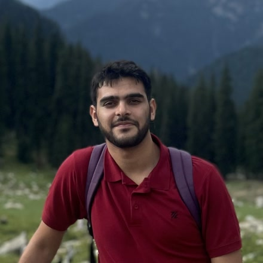

Hi, I’m Syed Furqan Ali. My work focuses on Embodied AI, with an interest in building robots that can perceive, reason, and act in the physical world. I have been exploring this through several research projects, including language-queryable drone navigation in Survey-RAG and VLM-guided safe landing area selection in an unknown environment in Hexagrid. I have also been collecting teleoperated demonstration datasets for training an SO-101 follower arm, where I trained an ACT policy that successfully performs pick-and-place tasks.
Embodied AI projects
Research interests
- Vision-language-action policies
- Open-vocabulary spatial memory
- Learning from demonstration
- Aerial autonomy for search and rescue
Recent research
Aug 2026 — Survey-RAG
Completed evaluation of an open-vocabulary UAV spatial-memory system, achieving 0.93 P@1 on a 44-query benchmark and 7/8 successful natural-language retrieval-to-flight requests.
Jun 2026 — Hexagrid
Developed an end-to-end VLM-guided UAV landing pipeline that compares six candidate views in a single inference and converts the selected landing region into a metric flight target.
May 2026 — Physical Robot Learning
Trained and deployed an ACT policy on a physical SO-101 arm, achieving 7/8 successful pick-and-place trials, and released the associated teleoperation dataset on Hugging Face.
Technical background
- Machine learning: PyTorch, Hugging Face, multimodal models, vision-language models, imitation learning, reinforcement learning, ACT and VLA policies
- Robotics and simulation: ROS, PX4, MAVSDK, AirSim, Isaac Sim/Isaac Lab, LeRobot
- Perception and vision: CLIP, SigLIP2, DINOv2, Qwen2.5-VL, OpenCV
- Hardware: NVIDIA Jetson Orin NX, Intel RealSense, physical SO-101 leader/follower arms
Workshop and field
The hardware gets built before it gets programmed. Printing, assembly, and time in the field.